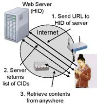
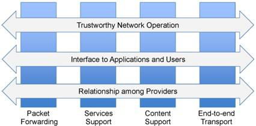

XIA Technical Approach
Vision
Our vision for the future Internet is that of a single internetwork that, in contrast to today's Internet, will:
- Be trustworthy: Security, broadly defined, is the most significant challenge facing the Internet today.
- Support long-term evolution of usage models: The primary use of the original Internet was host-based communication, while today's use is dominated by content retrieval. The future Internet should not only support communication between today's popular entities (hosts and content), but it must be flexible, so it can be extended to support new entities as Internet use evolves.
- Support long-term technology evolution: Advances in link technologies as well as storage and compute capabilities at both end-points and network devices have been dramatic. The network architecture must continue to allow easy and efficient integration of new link technologies and evolution in functionality on all end-point and network devices in response to technology improvements and economic realities.
- Support explicit interfaces between network actors: The Internet encompasses a diverse set of actors playing different roles and having different goals and incentives. The architecture must support well-defined interfaces that allow these actors to function effectively. This is true both for the interface between users (applications) and the network, and between the providers that will offer services via the future Internet.
- Rich set of communicating entities: We propose a network architecture that inherently supports communication between diverse entities, including hosts, services, and contents, and additional entities motivated by future usage models. This flexibility allows “late binding'' to a particular host or set of hosts and creates many opportunities for in-network optimization and innovation.
- Intrinsic security: The use of self-certifying identifiers for all principals as part of the architecture provides a useful set of integrity and accountability properties that we call intrinsic security. It can also be used to bootstrap systematic mechanisms for trust management, leading to a more secure Internet in which trust relationships are exposed to users.
- A pervasive narrow waist: The current Internet has benefited significantly from having a “narrow waist'' that identifies the minimal functionality a device needs to be Internet-capable. However, the current waist is limited to host-based communication. To widen its scope, while retaining the elegance of “narrowness'', we propose a pervasive narrow waist for all key functions, including access to principals (e.g., service, hosts, content), interaction among stakeholders (e.g., users, ISPs, content providers), and trust management. This will help interoperability at all levels in the system, not just packet forwarding. A result of this narrow waist is that, like the current Internet, our architecture provides the abstraction of a single internetwork, i.e. a network in which all principals are connected.
Architecture
Our architecture follows from five driving principles:
- The architecture must support an evolvable set of first-order principals for communication, exposing the respective elements that are intended to be bridged by the communication, be it hosts, services, content, users, or something as-yet unexpected. Performing operations between the appropriate principal types creates opportunities to use communication techniques that are most appropriate, given the available technology, network scale, destination popularity, etc. Exposing intent can dramatically reduce overhead and complexity compared with requiring all communication to operate at a lower level (e.g., host-level, as it happens today), or trying to “shoe-horn'' all communication into a higher level (e.g., using HTTP as the new narrow waist of the Internet).
- The security of “the network'' (from routing through applications), should be as intrinsic as possible--that is, not dependent upon the correctness of external configurations, actions, or databases. To achieve this, we propose to extend the system of self-certification proposed in the Accountable Internet Protocol (AIP) [1]. In AIP, hosts are “named'' by their public key. As a result, once a correspondent knows the name of the host they wish to contact, all further cryptographic security can be handled automatically, without external support. We call the generalization of this concept “intrinsic security''. Intuitively, this refers to the way that integrity is built into the interface such that any malicious perturbation of the protocol must yield a result that is clearly identifiable as ill-formed or incorrect. We extend the application and management of self-certifying identifiers into a global framework for integrity such that both messages on the control plane and data on the data plane of the network can be efficiently bound to some notion of an originating principal.
- The architecture must define a narrow waist that enables a flexible set of mechanisms for trust management, allowing applications and protocols to bridge from a human-readable description to a machine-readable, intrinsically secure, identifier. Moreover, trust should be made explicit and it should be possible to reason about the trust involved in accessing a principal. Intrinsically secure identifiers can only go so far up the “semantic stack'', and there must be support for bridging the gap from human-level identifiers (search, names, etc.) to cryptographic identifiers. Since trust management is highly context-dependent, this asks for a narrow waist on which diverse mechanisms can be created, used, and evolved independent of the other system components.
- The architecture must incorporate narrow waists for each principal it supports. The narrow waists identify the API for communication between various principals, and the network-level protocols and mechanisms to support the communication. The nature of the narrow waist will depend on the principal, but it will generally include basic communication operations with the principal and an interface for discovering, and possibly exercising some control over, how the network handles the operation.
- All other network functions must be supported as services out of, or atop, the architecture. This principle helps keep the architecture simple, easy to reason about, and evolvable. Building on the above principles, we introduce the “eXpressive Internet Architecture'' (or XIA). The term “expressive'' captures the fact that users can express intent by identifying the appropriate principal in each transmission. In other words, XIA represents a single internetwork supporting communication between a flexible, evolvable set of entities, rather than a coexisting set of network architectures, e.g., based on virtualization, or a network based on a new single principal (e.g., content instead of hosts). This offers maximum flexibility both for communication with the Internet at a particular point in time, and for evolvability over time.

XIA Components and their Interactions
The core of XIA, shown in the above figure, is the eXpressive Internet Protocol (XIP), which supports communication between various types of principals. In this project, we will focus on three types of principals: Content is defined by what it is. A host is defined by who (i.e., “which machine'') it is. A service is defined by what it does. However, XIA is designed to accommodate the future addition of other principals, e.g. users and groups. Each principal type has a narrow waist that identifies the minimal functionality required for interoperability. For example, in content-based networking, the network must expose a minimal API for users to access, discover, and search content, and for being able to reason about its origin. The narrow waist does not mandate the precise processing that must be performed, so networks can decide what types of communication to support in the fast path, depending on their role (e.g., LAN versus core) and point in the evolution (e.g., legacy versus cutting-edge).
Principals communicate using eXpressive Identifiers (XIDs), 160 bit identifiers that can variously represent a host, a piece of content, or a service. For ease of exposition, we will sometimes use the terms HID, CID, and SID to refer to the XIDs of hosts, content and services, respectively. The nature of the XID (e.g. public key or cryptographic hash) depends on the principal, but a common property is that knowing the XID of a communicating party makes it possible to verify certain security properties without needing to rely on external information (e.g. databases). Therefore, key security properties areintrinsic, or built-in. This generalizes our prior work in the Accountable Internet Protocol (AIP) [1], which introduced this property for Internet endpoints. For example, by identifying content securely by its cryptographic hash, we decouple content retrieval from reliance upon a particular host, service or network path. Once the receiver knows a self-verifiable description of the content it desires, it can retrieve it from anywhere and verify that it received the correct data. A key challenge is to understand, for each principal type, what security properties can be provided intrinsically and to design the appropriate protocols.
XIP can then support additional network functions as a diverse set of services. They include low-level services that help with packet transport over heterogeneous networks; we will use our preliminary work on designing a path-segment-based network architecture, Tapa [5], as an initial building block. At a higher level, we can build services for content-transfer and caching (building on our Data-Oriented Transfer (DOT) [2] and Redundancy Elimination systems [3]), and services for secure content provenance, among others. Applications use the network primitives and, optionally, services. Note that the distinction between applications and services in XIA is necessarily blurry. For example, a social networking application can both serve an end-user (person) and serve content over the network.
The components described so far form a “bare-bones'' network. Additional elements are needed to make the network secure, usable, and economically viable. First, intrinsic security does not in itself provide trustworthy operation of the network. For example, we must support various trustworthy mechanisms for users to obtain the correct XID for the principals they wish to interact with. Furthermore, we must provide network availability, ensuring that the network continues to operate even under attack. These mechanisms must build on the intrinsic security properties to yield a resilient and trustworthy network.
Second, the Internet involves a number of actors with different roles and goals. We need appropriate interfaces between these actors so they can all productively participate in the Internet. We can distinguish between the user-network and network-network interface. Users need visibility into (and some level of control over) the operation of the network. For example, users may want to identify not only the source of a piece of content, but also what in-network services helped deliver it, e.g., a “traceroute'' for content. We also analyze the relationship between technical design decisions and economic incentives, and seek policies that reward efficient and effective operation.

Let us use a content-based example of a user accessing the web to illustrate the operation of XIA. The figure on the left shows how user starts by submitting a URL to a web server. The HID of the web server could be part of the URL, or it could be derived from a host name in a trusted fashion. The web server would return one or more CIDs, uniquely identifying the contents of the page. The browser can then retrieve the content from any source. In today's Internet, it would likely contact the source web server or a local web cache. In the future, the client could simply send a request using the CID as the destination, relying on the network to find the “closest'' copy. This is of course only a simple example, putting the use of XIDs in a familiar context. Users can obtain XIDs from many other (trusted) sources, including e-mail, web pages, or services.

Research Agenda
Carnegie Mellon, Boston University, and the University of Wisconsin are pursuing an ambitious research agenda with the goal of defining, prototyping and evaluating the XIA architecture. The project is organized as seven research thrusts, as shown in the above figure. Four of the thrusts focus on core networking challenges (four vertical pillars), while the other three thrusts focus on the effective operation and use of an XIA-based internet in our society (three horizontal arrows).
The first three research thrusts will define the API and forwarding semantics and mechanisms for host, service, and content based communication. For host-based communication, we will use AIP [1] as our starting point to explore different organizations of the identifier stacks, packet formats and packet processing, and routing. The service support thrust will define mechanisms to support service with very different scope (from local to Internet-wide), focusing on routing, and service delegation and composition. The content thrust will build on our earlier research on DOT [2] and Redundancy Elimination [3]. Key research questions involve the definition of service identifiers, control over granularity and chunking, caching, and the distribution of content.
Supporting strong intrinsic security properties is also a key research area for the first three thrusts. The fourth core networking thrust will develop a diverse of end-to-end transport in support of diverse access network technologies, using our earlier work on Tapa [4] as a starting point.
The remaining three thrusts focus on how the XIA-architecture can support the role of various stakeholders in the Internet effectively. The trustworthy network operations thrust is working on trust management, e.g. how we can translate user-recognizable names into intrinsically secure identifiers, and network availability, e.g. how the intrinsic security properties of XIA can help deal with DOS attacks. The XIA project will also study how the XIA properties affect the user’s trust in the network. This will be done using a set of user studies that focus on helping users understand the provenance of data and how their data is shared. Finally, the last research thrust will focus on relationship between providers. Example research topics include economic incentives, viability of competition, and the role of monitoring and auditing.
The XIA project also includes a rich set of activities to maximize broader impact. They include an aggressive agenda for blending research and education, and broader outreach to diverse stakeholders in the Internet, including divers Internet users, network operators, and policy makers.
References
[1] Accountable Internet Protocol (AIP), David G. Andersen, Hari Balakrishnan, Nick Feamster, Teemu Koponen, Daekyeong Moon and Scott Shenker. In Proc. ACM SIGCOMM , Aug 2008
[2] An Architecture for Internet Data Transfer, Niraj Tolia, Michael Kaminsky, David G. Andersen and Swapnil Patil. In Proc. 3rd Symposium on Networked Systems Design and Implementation (NSDI), May 2006
[3] Packet Caches on Routers: The Implications of Universal Redundant Traffic Elimination, Ashok Anand, Archit Gupta, Aditya Akella, Srinivasan Seshan and Scott Shenker. In Proc. SIGCOMM, August 2008, Seattle, WA.
[4] Segment based Internetworking to Accommodate Diversity at the Edge, Fahad R. Dogar, Peter Steenkiste, CMU CSD technical report, CMU-CS-10-104, February 2010